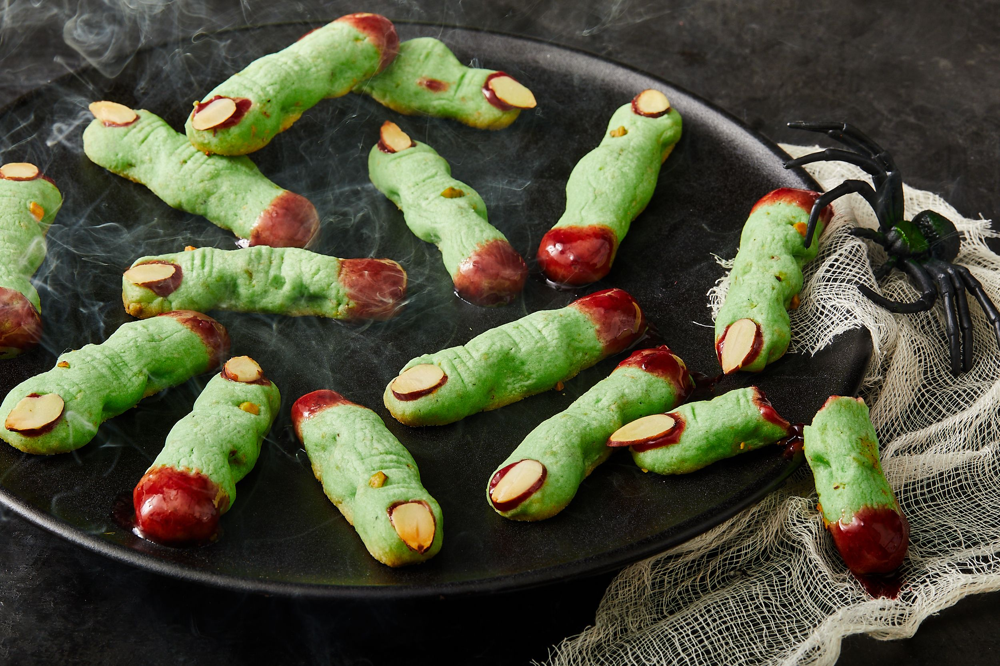
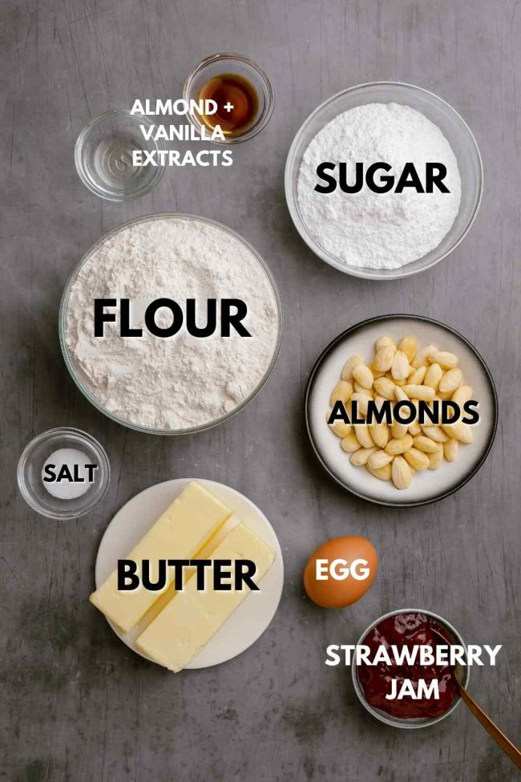
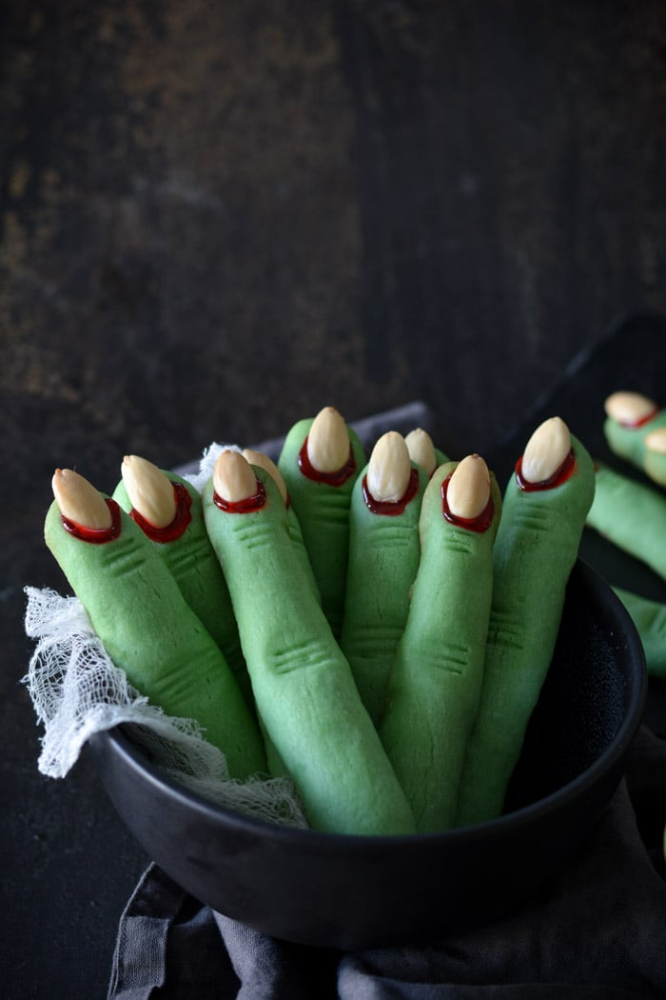

WITCH FINGERS!
These witch finger cookies are more than just a spooky treat. Each bite will
transport you into a realm of enchanted buttery goodness. They are no doubt the perfect dessert to
accompany the rest of our halloween specials.
So what are you waiting for?! These macabre delights won't make themselves!

Ingredients
- 2 2/3 cups all purpose flour or white whole wheat flour
- 1 cup powdered sugar
- 1/2 cup granulated sugar (optional)
- 1 cup unsalted butter
- 1 teaspoon salt
- 1 large egg
- 1 teaspoon almond extract
- 1 teaspoon vanilla extract
- 1 teaspoon baking powder
- 1/8 teaspoon food coloring for green fingers (optional)
- 1 tube red decorating gel or 1 cup strawberry jam
- 3/4 cup whole blanched almonds (whole or sliced)

Instructions
- In a large mixing bowl, add, softened butter, powdered sugar, 1 egg, almond and vanilla extract. Also add granulated sugar (if using). The result should be smooth and creamy once mixed.
- Add baking powder, flour and salt and mix until a stiff dough is formed Then add food coloring (if using). Cover tightly with plastic wrap and refrigerate at least for at least 40 minutes or up to 2 days.
- preheat oven at 325 F (165 C). Prepare a baking sheet with a piece of parchment paper
- Take one tablespoon of dough and roll it into the shape of a thin finger. Then press an almond down to the tip of the finger. Use a toothpick or a knife tip to create finger lines. Note: It is crucial that you do not make the finger too thick because the dough will expand while baking.
- Place the fingers on a cookie sheet and be sure to keep a gap of a few cm between each.
- Bake for 20-25 minutes in preheated 325 F oven till lightly brown, then remove from oven and let cool for 5 minutes.
- carefully remove the almonds and squeeze a small amount of red decorating gel or strawberry jam into the indentation. Then press the almond back in place. The "blood" should ooze around the almond "nail" once in place.
- For extra creepiness add more "blood" around the knuckles to enchance the severed finger appearence. Reserve the remaining strawberry jam or decorator gel to use as a dip.

Dietary Info
Vegetarian (but contains eggs). Not vegan or gluten free.
Serving Size
1 cookie per serving. (recipe yields around 60 cookies)
Calories per Serving
70-75 calories per cookie